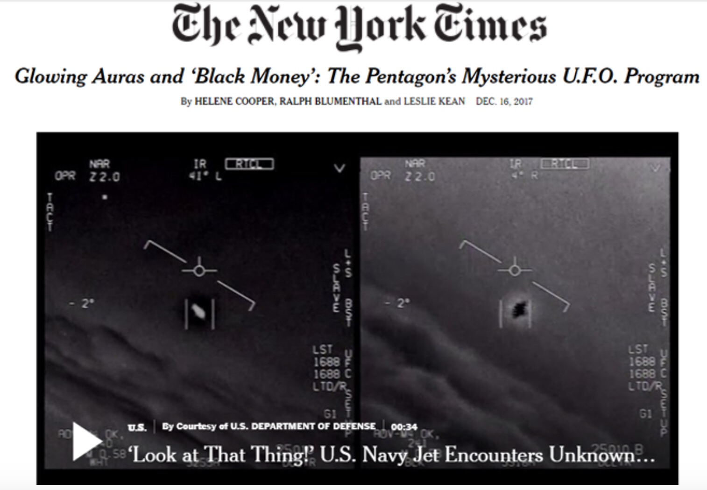

On December 17, 1969 the Secretary of the Air Force announced the termination of Project BLUE BOOK.
The Air Force program for the investigation of Unidentified Flying Objects.
The Air Force gave this summary of their findings:
December, 2017: The New York Times reported that the US Government had spent over 22 million in black budget money on the investigation of UFOs.
This official footage of a UFO was released to the public by the US Air Force.
Despite statements made to the public almost 50 years ago,
the US Air Force has continued investigation into the mystery.
In 1975, the National UFO Reporting Center was established to collect and report UFO sightings in the United States.
In 2017 they received over 0 reports.
Despite the Air Force's best attempts at extinguishing public interest, UFO reports continue.
So what is the story behind this phenomenon?
To find out, let's go back to when it all began...
February 25th, 1942 at 2:25am an unknown craft hovered over the city of Los Angeles for over an hour.
The military fired over 800 rounds of anti aircraft guns at the craft.
THEY COULD NOT BRING IT DOWN.